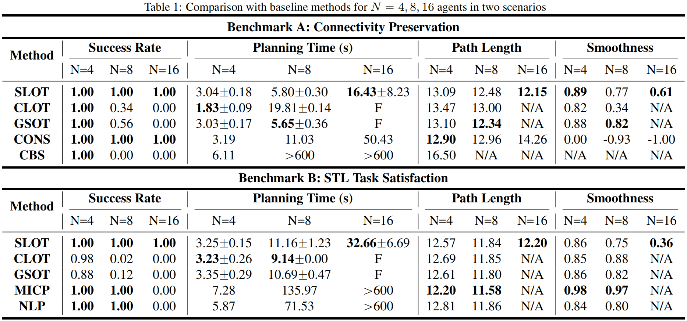

Multi-agent Motion Control via Collaborative Optimal Transport
Abstract
Multi-agent systems often need to navigate through obstacle-cluttered environments while performing complex tasks. To ensure collision-free trajectories among the agents and with the obstacles is essential for the overall safety, along with additional requirements such as smoothness, relative formation, connectivity maintenance and temporal tasks. Existing work mostly focuses on the design of analytical controllers that encapsulate all these constraints, which often impose conservative assumptions and suffer from undesired local minima due to conflicting non-convex objectives. This work proposes a novel motion control scheme for multi-agent systems under various safety and task specifications. It is formulated as a general constrained trajectory optimization problem for all agents. A gradient-free method called collaborative optimal transport (CLOT) is proposed that optimizes a batch of system-wide smooth trajectories over highly nonlinear costs via the zero-order Sinkhorn-Knopp step. Furthermore, to alleviate the exponential computational complexity, an original method called sequential optimal transport (SLOT) is introduced and tailored for the multi-agent systems. It decomposes the system-wide trajectory optimization into a sequence of local adjustments via a hybrid tree search over the agent sequence and trajectory samples. It is shown to improve the scalability from a few agents to over 100 agents. Lastly, its applicability is extensively demonstrated in both simulation and hardware, over diverse complex environments and high-level tasks, including formation, connectivity maintenance and signal temporal logic tasks.
Simulation Results
Scenario 1: Formation Control
Scenario 2: Time-varying Formation
Scenario 3: Connectivity under STL Task
Scenario 4: Swarm Flocking
Scenario 5: Dynamic Environments
Hardware Experiment
Comparison with Baselines
